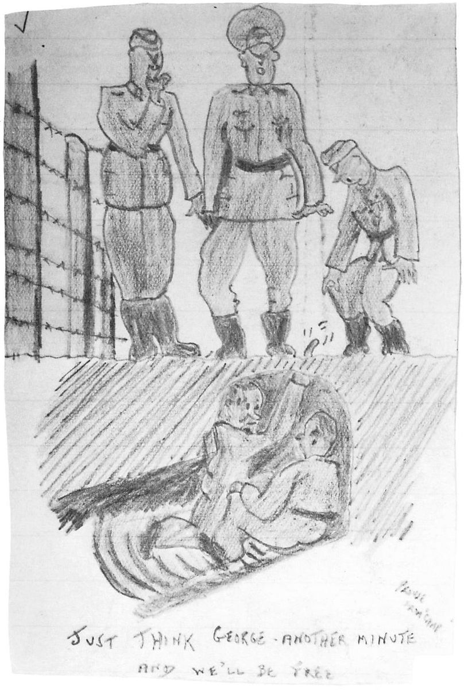
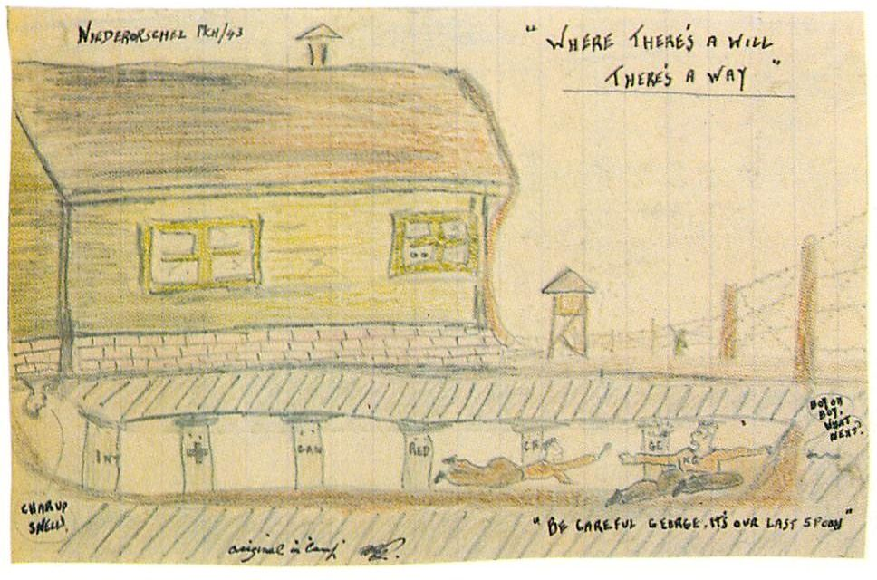
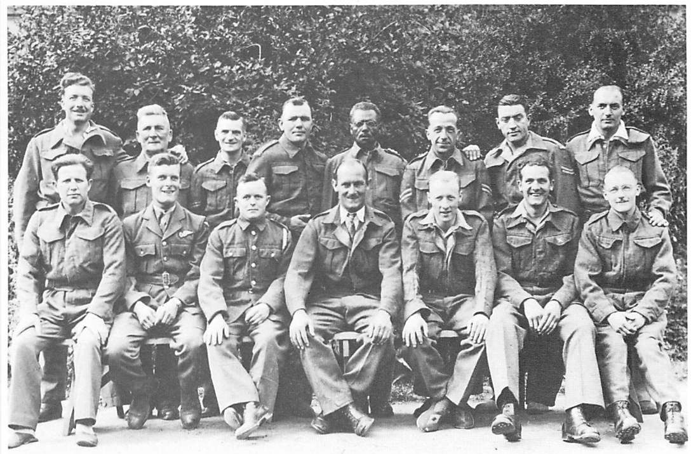
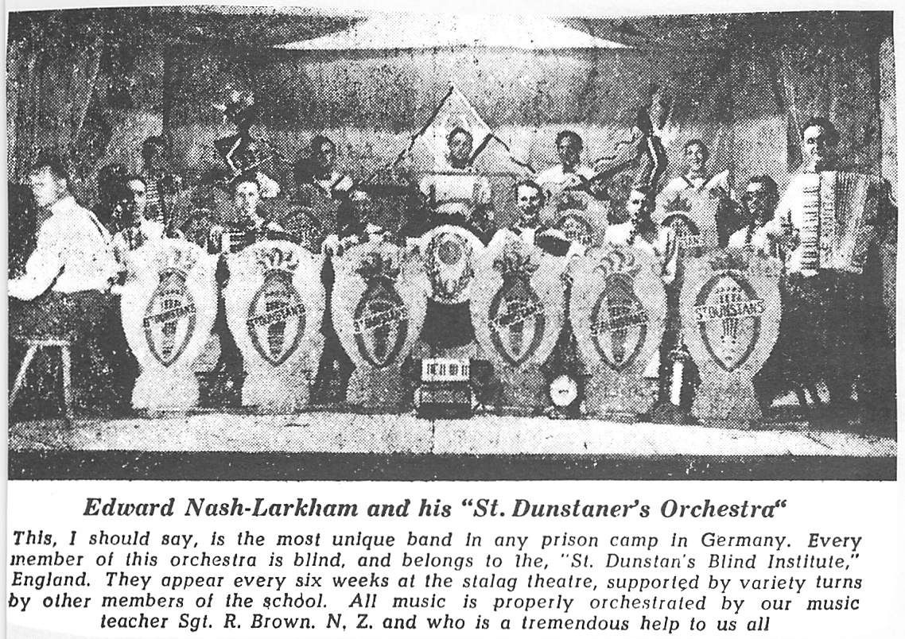
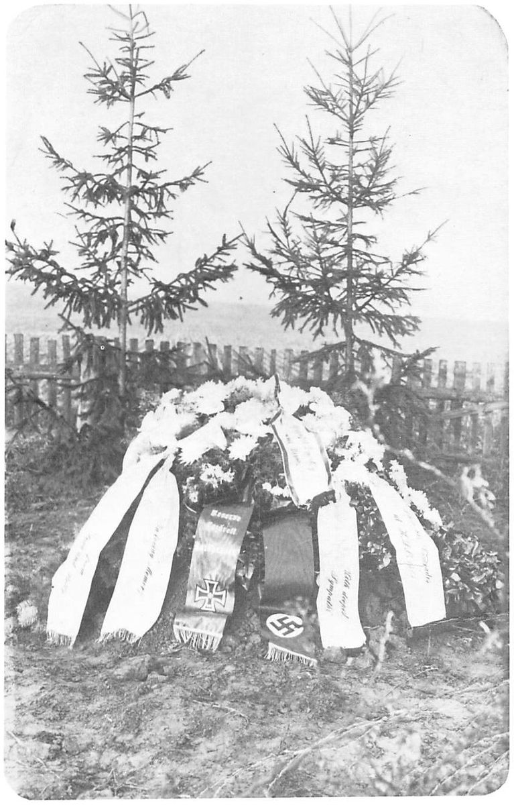
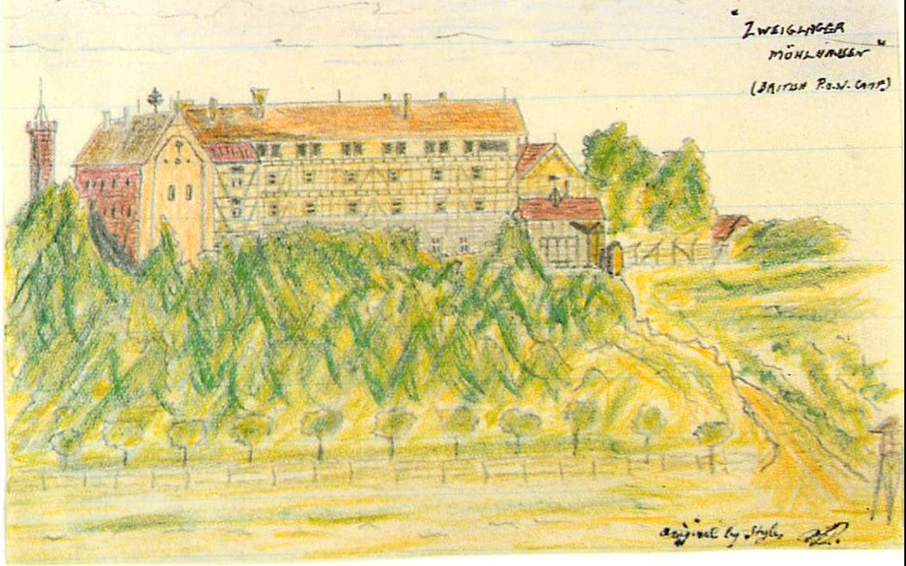

Chapter 6The Castle on the Hill

This time we weren’t sent back to the work kommando but spent the rest of the summer of ’43 in Molsdorf. During this period, tunnels were constantly being dug and discovered. Searches were constant and usually took place during the night. It was not unusual to be awakened two or three times nightly for head counts and searches for new tunnels. Snapping German police dogs were part of these visits and, although they were restrained by their leads, they often got too close for comfort.
During the searches, the boards were removed from the base of each hut so that the guards could see underneath the buildings, which stood on two-foot stilts. The ground was coated with lime to enable them to ascertain that the earth was undisturbed under the huts. This didn’t stop the tunnels from being constructed though, for, during the night, earth was removed from beneath one hut or the other to start a hole, which was then cleverly concealed by a piece of plywood that had been removed from the walls of the hut. This was then covered with a coat of lime and lowered into place by four pieces of thread, each attached to a corner. As the hole was deepened, a man could be lowered into it and the plywood replaced over him, enabling the tunnelling to proceed in shift work.
The earth was hidden in the ceilings, which at times almost collapsed, and was finally disposed of by each man filling his pockets with dirt and then sprinkling it on the grounds of the camp, where it quickly became trampled into the earth by the ever moving prisoners.

Life was a never-ending battle of wits between the prisoners and the Jerrys. Punishment for a new tunnelling attempt was usually given by calling a parade and having the whole camp stand in the hot sun for hours on end without food or water. One day the camp Commandant called a parade to inform us, through an interpreter, how the war was progressing. It was a tale that we had heard often, telling us of how the brave German army had repulsed the enemy, leaving large numbers of our comrades dead. The prisoners’ spontaneous reply was a loud and ringing cheer. The Commandant threw his hands up in disgust and told us that he would not give us any more news as we must be totally stupid to be cheering the death of our comrades. What he did not realize was that we were better informed than he, having our own methods of keeping abreast of the news.
Over and above the tunnels, individual escapes were attempted. One man calmly climbed over the wire in daylight, with rags wrapped around his hands for protection from the barbs. He was quickly apprehended and fortunately was not shot. Another, who took advantage of a new ditch being dug for the latrines, hid in the ditch and worked all night with only a spoon for a tool. He also was caught after a hard night’s labour for nothing.
A trip wire, about a foot from the ground, ran completely around the inside perimeter of the camp. It was about twelve feet from the barbed-wire fence and no one was allowed to step over it on penalty of death. One day some prisoners were tossing a ball around when the ball went beyond the wire. One cool Canadian stepped nonchalantly over it to retrieve the ball, and the guard in the tower yelled a warning and squeezed off a short burst from his machine-gun. The prisoner unhurriedly retrieved the ball, gave the tower guard a disdainful look and stepped back over the wire to continue the game.
When we weren’t tunnelling or plotting escape strategy, our time was spent in pleasant pastimes of our own devising or doing the less than pleasant tasks assigned us by the Jerrys.
One of the dirtier jobs that came up in rotation was the emptying of the latrines. These consisted of a long row of seats partly enclosed and set over a trench. Periodically, a ‘honey-wagon’ rolled in, drawn by a tired horse. It was a metal container equipped with a hose that was lowered into the trench. Our job was to handle the pump that removed the contents out of the ditch and into the wagon. The stench was horrible but what was worse was that when the container was filled an automatic device sucked the contents out and hurled them into the air over the barbed wire and into the fields beyond to be used as fertilizer for potatoes grown for the consumption of the prisoners. With any type of a wind, a good portion of the contents blew back in your face, the reason that most prisoners hid in their huts, except for the poor slobs on duty. I labelled this ‘perpetual motion’, as we ate the potatoes, disposed of them in a time-honoured fashion, then blew the residue over the field to help grow the potatoes that eventually found their way back into the camp again to be consumed.
On August 19, 1943, we held a short service to mark Dieppe’s first anniversary. On August 28, I was sent to the hospital in Arnstadt for recurring back trouble, my personal reminder of the raid. When the mortar exploded during the raid, a stone, thrown up by the blast, had hit me at the base of the spine. The injury was further aggravated by my being forced to lift too heavy a weight at Niederorschel. At the work kommando, I collapsed and was taken to the village doctor. I was held up between two prisoners while the doctor swung his arm to gain momentum and then brought his fist down on the top of my head. I yelled and fell as the pain hit my spine. His verdict was, ‘No blood, no swelling, back to work!’ Other prisoners in the camp covered for me by taking my work shifts and moving me from bed to bed as the shifts changed, a deed I’ll never forget.
I wasn’t back from Arnstadt very long when my eyeball got scratched with grit from the ever blowing dust. I was sent to the hospital in Haina, where the doctors applied drops. About a week later, my eye was still bad and again I went to Haina.
On this journey, I got a sense of the effect of the Allied bombing of Germany. While waiting for the train, a woman approached me on the platform and deliberately tried to spit in my face. I jumped back just in time but will never forget the look of intense hatred on her face. The guard just smirked and said nothing. On the train, I got nothing but glares of hostility and was glad to reach our destination. I could not believe that German prisoners in Canada would get this same hostility.
In the hospital, they discovered the scratch and special drops were put in each eye, one to dilate the injured eye and one to strengthen the other, or so I was led to believe. The trouble was that both eyes were dilated in error and my vision soon blurred to the point where I couldn’t see. They assured me that my sight would be corrected in a few hours and shortly thereafter a blind POW escorted me to the blind ward for a temporary stay.
It was here that I learned of the remarkable courage of the sightless. It was bad enough to be imprisoned for an indeterminate period of time, but to be blind as well seemed to me to be just too much punishment for these men to take. All I could do was admire their dexterity and outward cheerfulness. There were a few tears shed, but only at night when they thought no one would know. It made me feel both ashamed of my minor ailment and thankful that I wasn’t one of them.


I was interned here for ten days, even though my vision had returned to normal quite quickly. Each night I heard horrible screams coming from the next building, which I understood was an experimental hospital housing political prisoners. I couldn’t learn too many details, but I did catch sight of some of the inmates during the day, pacing the guarded grounds in white and blue striped uniforms, the dress of a political prisoner. They were mostly Jewish, I was told.

One morning at dawn, when I got up to go to the latrine, I looked through the barred window and could see an army truck being loaded with apparently dead bodies, one on top of the other. They were all in striped uniforms. My first feeling at witnessing this macabre scene was one of horror, mingled with a touch of fear at the closeness of death. I closed my eyes and then opened them, hoping the scene would disappear, but no, it was still there and all I could do was watch with a dreadful and scary fascination.
This was the first indication I had of the atrocities that took place throughout Germany. The chilling horror and blind hopelessness of it stayed with me throughout the war and for a long time after.
On September 16, my eye having healed, I returned to Molsdorf and, on the 20th, the whole camp was moved in box-cars to a new prison building in Mühlhausen. This was called Zweilager (also ‘the castle’) and we were told that it was escape-proof and was for criminal POWs only.

At the station we were met by large bodies of guards and police and were marched under escort to our new quarters about two kilometres away. This was on a slight rise and at first sight was very different from the usual POW compounds. It was a large building, more like a jail, and was the Germans’ answer to the many escapes and tunnels built at Molsdorf, which was badly undermined.
We entered through huge gates into a cobblestoned courtyard, lined up for the never-ending head count and were assigned to a dormitory that held about twelve men in double-decked bunks. There were three floors, with cells in the dungeons beneath, which were dark, damp and flea-infested. Overall, it was a nice change from the blowing dust in summer and the thick mud in winter of Molsdorf, but we realized that it would be very hard to escape from.
One of the first things I set out to do was find a suitable hiding place for my notes. On enlistment I had started a wartime diary. I kept notebooks covering my activities up to the time of Dieppe, and these were in a kit bag I left with relatives in Birmingham. From Dieppe to POW camp I continued the habit of taking notes, but it was hard to retain them. For instance, just before my first escape I left my notes in between layers of plywood in the bottom of a suitcase. This was left with a buddy who eventually destroyed it as he didn’t think I would return. From that time on I hid my notes in linings, between walls, under floor boards, and in any niche I could find until the time came to retrieve them.
We received wartime logs from the War Prisoners’ Aid of the YMCA in Geneva, Switzerland, and most POWs started writing and keeping a daily log. Fortunately, I held off commencing mine until I could get my notes together. By fortunately I mean that after a few months the Germans confiscated the logs. When they were finally returned, any writing detrimental to the Third Reich was censored and warnings were issued about future writings.
From then on, the only items I carried on my person were my rice paper map, a compass and my official POW photo. The map was in my boot heel between two layers of leather, as previously mentioned, though another gimmick was to tie it in the knotted corner of an extremely soiled handkerchief. This worked over and over again, since when being searched the Germans, with a disgusted expression, would always push it gingerly aside with a stick or short baton.
The compass was in the form of two metal buttons sewn on my tunic; they were magnetized and a small ‘white dot’ on one button, denoting ‘north’, was the only difference from ordinary buttons. (Special thanks to an Air Force member!) The photo was hidden in the false bottom of a tin I used for carrying cigarette butts. This consisted of a small English ‘Players’ tobacco tin and an English cheese tin of slightly smaller diameter. The ‘rolled’ edge of the cheese tin hid the edge of the tobacco tin after insertion, and the ‘Players’ lid fitted perfectly over the edges of both tins.
We had barely become used to our new accommodation when we were temporarily shipped out again. A Red Cross Commission was due to arrive at the camp and choose men for repatriation. These were to be only DUs (definitely unfit for service), such as amputees, men with bad ulcers, the blind, etc., who would be sent home in a prisoner exchange. As more wounded arrived from Haina and Bad Sulza, on October 12, all except the DUs were evacuated in box-cars to Langensalza.
This was a hellish nightmare, as the cars were so overloaded that we could only stand shoulder to shoulder. As the freight moved, every man stumbled and shuffled his feet to maintain some balance. This caused the former contents of the box-car, powdered lime, to rise in eye-stinging and choking clouds. We yelled in vain, trying to attract the guards’ attention. The ride seemed to be endless and, on reaching our destination, we emerged choking and spitting and with our uniforms covered in lime dust. We raised hell, but all those dumb bastards did was laugh in our faces.
The temporary building they herded us into was a two-storey affair. We were all put into the second storey, in overcrowded conditions. The windows, apart from being barred, were all boarded shut. There were no latrines, only a deep hole outside the building where groups were taken under guard. The hole was square and poles had been nailed to stakes for seating purposes. These poles were on all sides of the hole and, when you sat, you had an audience who could view you from every angle. This was not only embarrassing for even the toughest of prisoners but humiliating as well. If you had a hard time and were on the slow side, you heard shouts of derision to hurry it up. If you were fast, you received cheers of encouragement to get it over with and give the next man a chance.
On one occasion, there was a prisoner who was having a very difficult time. He was constipated. He looked sheepish and couldn’t seem to get things going. Finally, with reddened face and bulging eyes, his efforts started to emerge. This started an extra loud cheer from the gallery. I swear the poor man inhaled deeply, his effort disappeared, and he relinquished his seat to the next victim.
If you were unfortunate enough to have to go at night, the only convenience was a huge hogshead on the bottom floor, with wooden steps leading up the side. This was at the foot of very steep stairs and at night the building was in total darkness, making it necessary to feel your way along. My first trip to the hogshead was, I hoped, my last. I managed to feel my way down the stairs and, with a sigh of relief, climbed the steps of the huge barrel. I just got my penis over the edge when a hand shot out of the darkness and grabbed it. I let out a blood-curdling yell, causing the unknown fag to drop it. I heard him scrambling up the stairs as the guards came running in, alerted by my cry. I tried to explain to them what had happened and they told me that, being a prisoner, I shouldn’t have yelled out and that they thought I was crazy to complain. Instead, they claimed, I should have kept quiet and enjoyed it.
We returned to Mühlhausen on October 24, once again in sealed box-cars but, luckily, this time without the lime to add to our discomfort. The repatriation of the DUs had now been completed and we noticed, upon our arrival at the camp, that many familiar faces were missing. It made us feel sad and sorry for ourselves that we could not have gone with them but, on the other hand, we were happy that they were on the way home.
A few days later, there was a sign that the day of our going home might be getting closer. On October 31, a large group of Allied planes passed overhead. We had heard planes many times before, but on this day we could also hear the distant rumble of bombs falling on Kassel.